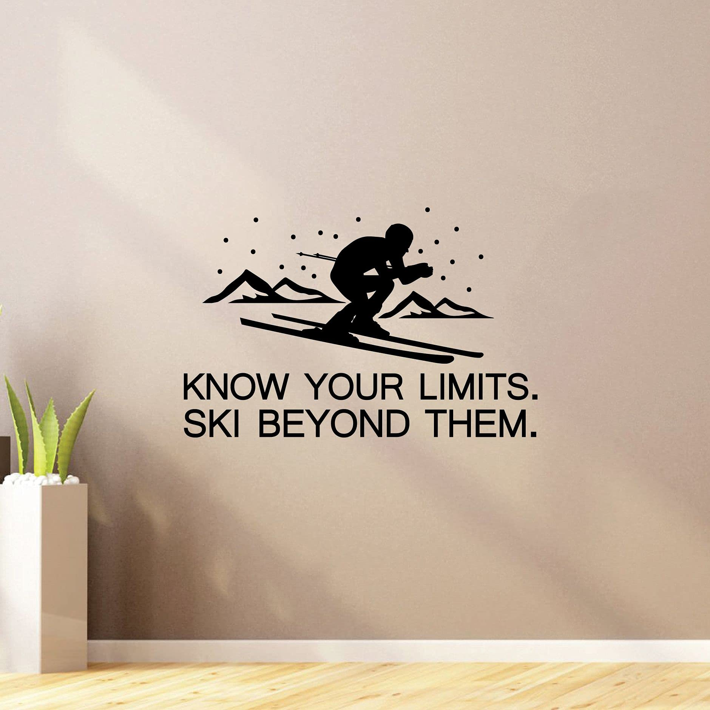
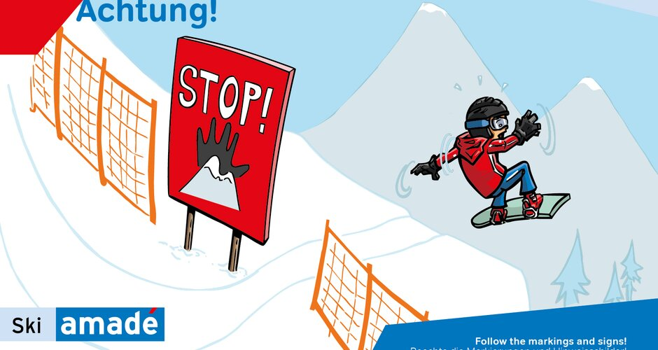
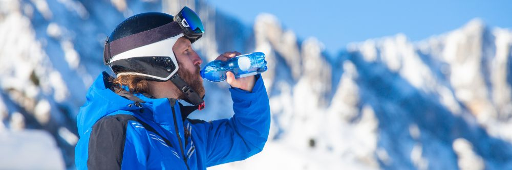

Skiing is thrilling, but it also comes with risks that require preparation and awareness. Whether you’re a beginner or an experienced skier, following safety guidelines ensures your time on the slopes is fun, injury-free, and memorable. Here’s everything you need to know about ski safety.
1. Wear the Right Gear
Proper equipment is essential. Always wear a certified helmet to protect against head injuries. Make sure boots fit well, skis or snowboard bindings are adjusted correctly, and goggles protect your eyes from sun, wind, and snow glare. Layered, waterproof clothing keeps you warm and dry.
2. Warm Up and Stretch
Skiing puts stress on your muscles and joints. Start with light stretching and exercises before hitting the slopes to reduce the risk of strains or sprains. Warm muscles respond better to sudden movements, helping prevent accidents.

3. Know Your Limits
Choose slopes that match your skill level. Beginners should stick to green runs, while intermediate and advanced skiers can explore more challenging terrain. Avoid overexertion—fatigue increases the chance of falls and injuries.

4. Follow Slope Rules

Every ski resort has safety guidelines and marked trails. Respect signs, stay in designated areas, and yield to other skiers. Maintain a safe distance from others and control your speed, especially on crowded runs or in poor visibility.
5. Learn How to Fall
 Falling is inevitable, but falling safely can prevent serious injuries. Try to fall to the side, keep your limbs close to your body, and avoid using your hands to break the fall. Learning how to get up safely is also important.
Falling is inevitable, but falling safely can prevent serious injuries. Try to fall to the side, keep your limbs close to your body, and avoid using your hands to break the fall. Learning how to get up safely is also important.

6. Stay Hydrated and Take Breaks
Cold weather can mask dehydration, so drink water regularly. Take breaks to rest your muscles, eat snacks, and warm up. Overexertion leads to slower reaction times and higher risk of accidents.

7. Be Weather Aware
Check weather and snow conditions before skiing. Fog, high winds, or icy surfaces require extra caution or even postponing runs. Always have a map of the resort and know emergency contact points.
By following these safety tips, skiing becomes a rewarding and worry-free experience. Proper preparation, awareness, and respect for the slopes ensure that every run is not only thrilling but also safe.